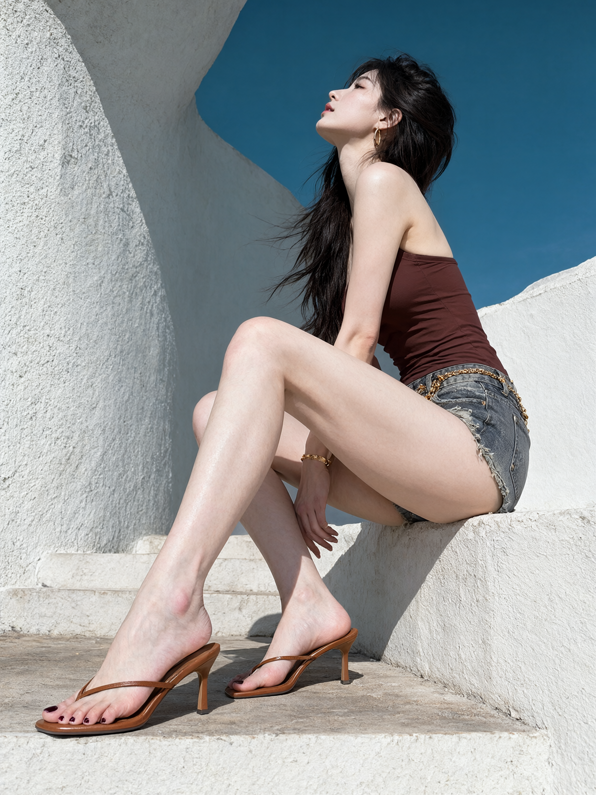

02 低位仰拍 · 侧坐抬头
一张晴天户外的写实时尚人像照片，一位25岁的成年女性侧身坐在白色水泥高台边缘，置身于粗糙的白色雕塑式建筑与偏青的深蓝天空之间。
竖向3:5构图，完整呈现头顶至鞋尖。相机贴近下方台阶，靠近前景鞋脚，斜向上仰拍。人物头部位于右上区域，躯干位于右侧中上部，臀部落在画面右侧的高台边缘，双腿向中央和左下方延伸。近侧鞋脚占据左下方前景，其横向跨度约为头部轮廓宽度的两倍。头部距离镜头较远，显得较小，腿部沿画面对角线拉长。鞋尖下方保留一段台阶地面。左侧粗糙白墙与上方蓝天占据大面积背景。
她侧身坐在高台边缘，躯干朝画面左侧，近侧肩膀和上臂呈侧面轮廓。胸口抬起，颈部伸展，下巴向上抬，头轻轻后仰，侧脸朝向左上方，视线向上。鼻尖、下巴和颈部轮廓迎着日光，表情舒展，嘴唇自然微张。
两条腿均屈膝。近侧大腿从右侧髋部斜向左上方延伸至画面中央的膝盖，小腿再沿对角线伸向左下方，脚落在低一级台阶上，成为最大的前景部位。另一侧膝盖位于近侧膝盖左后方，小腿被前方腿部局部遮挡，脚在画面下方中央、近侧脚后方。两只脚具有清楚的前后距离与尺寸差异。
近侧手臂沿身体侧面向下延伸，前臂被大腿局部遮挡。一只手从两腿之间露出，手指自然向下垂落。肩臂纤细，腰部收窄，大腿轮廓饱满，近侧小腿与脚因靠近镜头而呈明显放大的透视。
她的皮肤白皙、白里透红，浅白底色中透出柔和粉色，肩臂、大腿、小腿和脚保持一致的白皙肤色。肩头、膝盖与脚趾带有自然浅粉红血色。受光处呈明亮的粉白色，局部高光接近白色，阴影保留浅淡粉灰色，皮肤纹理与细微明暗变化清晰可见。
浓密的深棕近黑长发从头顶向后梳起，长发垂落在胸前与身体左侧，延伸至腰部附近。风吹起少量发丝，发丝分别伸向左侧墙面和右侧天空。耳边佩戴金色长椭圆圈耳环。
她穿着低饱和深红棕色泳装上衣，侧面布片贴合躯干，上缘沿胸侧延伸至背部，肩膀与上背露出。 下身是灰蓝色水洗牛仔短裤，裤脚很短，边缘有浅色毛边，侧面可见磨损与破口。 短裤腰部带有金色链条装饰，两腿之间垂下一小段金色链条，末端带小吊饰。 露出的手腕附近可见金色手镯。 双脚穿焦糖棕色夹趾高跟凉鞋，细带在脚背前方交叉，后跟敞开，鞋跟为窄方柱形。 近侧凉鞋完整落在左下方台阶上，鞋底、鞋跟、脚背与脚趾清晰可见。后方凉鞋在画面下部中央，尺寸较小。脚趾涂深酒红色指甲油。
高处斜射的强日光照亮人物和白色建筑，肩头、膝盖与小腿形成明亮反光。人物的腿部、手和鞋子在右侧白色立面与下方台阶上投下清楚的长阴影，投影边缘明确。
左侧建筑呈厚重的白色曲面与竖向起伏结构，表面有粗糙砂粒纹理。受光面呈略带冷灰的白色，背光区域呈蓝灰色。右上方天空为均匀、浓郁的偏青深蓝。台阶地面带有浅褐色磨损与细小斑点。整体呈清晰的数码摄影质感，白皙粉润的皮肤、深色长发、红棕上衣与冷白建筑形成明确的色彩关系。